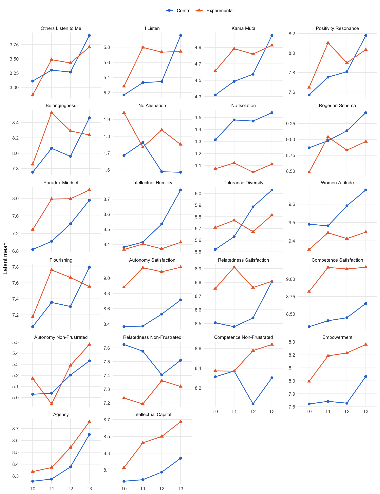

source("R/packages.R") # all packages (Chapter 1)
source("R/settings.R") # waves, conditions, folders (Chapter 1)
df <- readRDS("cache/df.rds") # one row per questionnaire (Chapter 2)
df_wide <- readRDS("cache/df_wide.rds") # one row per person (Chapter 2)
item_names <- names(select(df, ListenOther1:CompetenceNonFrustrated4))
source("R/scales.R") # the 23 scales (Chapter 2)
source("R/measurement.R") # models of the constructs (Chapter 6)
source("R/longitudinal_models.R") # waves, at(), wave_pairs (Chapter 7)
invariance <- readRDS("cache/invariance.rds") # verdicts (Chapter 7)11. Latent difference-in-differences
NoteAbout this chapter
Estimates the training effects on the latent means of each construct: how much more the experimental group changes than the control group while it trains (January to March), and the mirrored effect when the control group trains (September to December). The models hold the measurement equal over the waves and over the two groups; Chapter 7 tests the first over all four waves and the second before the training, at T0. Besides the effects themselves, the chapter reports how the control group changes while it waits, the counts after a correction for multiple testing, a restricted model in which the latent means stay level outside the training, and the effects on the sample sets S0 to S9. Feeds the latent results of Hypotheses 1 to 3, the wait-list replication, the latent effect sizes and the sensitivity tables of the supplement.
11.1 The model
How does a factor model estimate a difference-in-differences? Each construct gets one structured-means model in two groups, Control and Experimental, on the wide data (Seddig et al., 2022; Andersen & Seddig, 2026). Four parts make it a latent difference-in-differences:
- Measurement held equal. Loadings and intercepts keep their labels over the four waves and, because lavaan applies a label in every group, over the two groups. Chapter 7 tests the equality over the waves (7.3) and, before the training, over the groups (7.6); there the χ² test finds different loadings for Rogerian Schema and Tolerance Diversity and different intercepts for Paradox Mindset and Empowerment. The first item’s intercept is fixed at 0, so the latent means lie on that item’s scale from 0 to 10. Two-item constructs are again tau-equivalent, with factor variances of 1; their means are in latent standard deviations.
- Eight free latent means, one per group and wave.
- The backbone of Chapter 7: correlated factors, residual covariances within a wave and autocorrelated residuals over the waves. Age (centred) and sex enter as covariates, with one path per group.
- Every contrast is a parameter. For each of the six windows between two waves: the change in the experimental group (EG), in the control group (CG) and their difference (DiD, positive when the experimental group gains more). Standard errors come from the delta method.
The wait-list design adds a test: if the training works the same in both groups, the effect while the experimental group trains (T0 to T1) and the mirrored effect while the control group trains (T2 to T3) cancel out. A replication test near 0 supports this; it is a significance test, not an equivalence test.
# Latent difference-in-differences (Chapter 11): a structured-means model of
# one construct in two groups over the four waves (Seddig et al., 2022).
# Needs R/measurement.R and R/longitudinal_models.R (waves, at(), wave_pairs).
# the six windows between two waves
windows <- c(
T01 = "T0 to T1, January to March: the experimental group trains",
T02 = "T0 to T2, January to September: durability",
T03 = "T0 to T3, January to December: the full year",
T12 = "T1 to T2, March to September: maintenance",
T13 = "T1 to T3, March to December: maintenance and control training",
T23 = "T2 to T3, September to December: the control group trains"
)
# a window's name from its two waves: T0 and T1 -> T01
window_of <- \(pair) str_c("T", str_sub(pair[1], 2), str_sub(pair[2], 2))
smm_model <- \(construct, covariates = c("age_c", "female")) {
items <- model_items[[construct]]
pairs <- residual_pairs |> filter(construct == .env$construct)
two_items <- length(items) == 2
# loadings equal over the waves and, since labels hold in every group,
# over the two groups; two items share one label L (tau-equivalent, factor
# variances 1)
labels <- c("1*", paste0("lam", seq_along(items)[-1], "*"))
loadings <- if (two_items) {
map_chr(waves, \(w) str_c("F_", w, " =~ NA*", at(items[1], w), " + ",
str_c("L*", at(items, w), collapse = " + ")))
} else {
map_chr(waves, \(w) str_c("F_", w, " =~ ",
str_c(labels, at(items, w), collapse = " + ")))
}
variances <- if (two_items) str_c("F_", waves, " ~~ 1*F_", waves) else
character()
covariances <- map_chr(wave_pairs, \(p) str_c("F_", p[1], " ~~ F_", p[2]))
# intercepts equal over waves and groups; the first item's intercept is 0,
# so that the latent means lie on its scale from 0 to 10
intercepts <- imap(items, \(item, j) {
label <- if (j == 1) "0*" else str_c("tau", j, "*")
str_c(at(item, waves), " ~ ", label, "1")
}) |> unlist()
# eight free latent means: Control and Experimental at each wave
means <- str_c("F_", waves, " ~ c(m_con_", waves, ", m_exp_", waves, ")*1")
# residual covariances within each wave, autocorrelated residuals over
# the waves (as in Chapter 7)
within_waves <- map2(pairs$item_a, pairs$item_b, \(a, b)
str_c(at(a, waves), " ~~ ", at(b, waves))) |> unlist()
across_waves <- map(items, \(item) map_chr(wave_pairs, \(p)
str_c(at(item, p[1]), " ~~ ", at(item, p[2])))) |> unlist()
# covariates: one path per group (g1 Control, g2 Experimental), equal over
# the waves, and the difference between the groups
gammas <- map(covariates, \(cv)
str_c("F_", waves, " ~ c(g1_", cv, ", g2_", cv, ")*", cv)) |> unlist()
gamma_differences <- str_c("delta_gamma_", covariates, " := g2_",
covariates, " - g1_", covariates)
# per window: change in each group (EG, CG) and their difference (DiD,
# positive when the experimental group gains more)
change <- \(group, p) str_c("(m_", group, "_", p[2], " - m_", group, "_",
p[1], ")")
contrasts <- map(wave_pairs, \(p) c(
str_c("EG_", window_of(p), " := ", change("exp", p)),
str_c("CG_", window_of(p), " := ", change("con", p)),
str_c("DiD_", window_of(p), " := ", change("exp", p), " - ",
change("con", p))
)) |> unlist()
# wait-list replication: the two training effects cancel out
replication <- str_c(
"Replication_test := ",
change("exp", c("T0", "T1")), " - ", change("con", c("T0", "T1")), " + ",
change("exp", c("T2", "T3")), " - ", change("con", c("T2", "T3"))
)
# the order matters: for Women Attitude, whose solution lies at a
# boundary, it decides which of two optima the estimation reaches
c(loadings, intercepts, variances, covariances, means, within_waves,
across_waves, gammas, gamma_differences, contrasts, replication) |>
str_c(collapse = "\n")
}
# two groups, robust maximum likelihood, missing waves by full information
fit_smm <- \(model, data = df_wide) {
sem(model, data = data, group = "condition", estimator = "MLR",
missing = "fiml")
}What does a model look like? Belongingness, in full:
smm_model("Belongingness") |> cat("\n")F_T0 =~ 1*Belongingness1_T0 + lam2*Belongingness2_T0 + lam3*Belongingness3_T0
F_T1 =~ 1*Belongingness1_T1 + lam2*Belongingness2_T1 + lam3*Belongingness3_T1
F_T2 =~ 1*Belongingness1_T2 + lam2*Belongingness2_T2 + lam3*Belongingness3_T2
F_T3 =~ 1*Belongingness1_T3 + lam2*Belongingness2_T3 + lam3*Belongingness3_T3
Belongingness1_T0 ~ 0*1
Belongingness1_T1 ~ 0*1
Belongingness1_T2 ~ 0*1
Belongingness1_T3 ~ 0*1
Belongingness2_T0 ~ tau2*1
Belongingness2_T1 ~ tau2*1
Belongingness2_T2 ~ tau2*1
Belongingness2_T3 ~ tau2*1
Belongingness3_T0 ~ tau3*1
Belongingness3_T1 ~ tau3*1
Belongingness3_T2 ~ tau3*1
Belongingness3_T3 ~ tau3*1
F_T0 ~~ F_T1
F_T0 ~~ F_T2
F_T0 ~~ F_T3
F_T1 ~~ F_T2
F_T1 ~~ F_T3
F_T2 ~~ F_T3
F_T0 ~ c(m_con_T0, m_exp_T0)*1
F_T1 ~ c(m_con_T1, m_exp_T1)*1
F_T2 ~ c(m_con_T2, m_exp_T2)*1
F_T3 ~ c(m_con_T3, m_exp_T3)*1
Belongingness1_T0 ~~ Belongingness1_T1
Belongingness1_T0 ~~ Belongingness1_T2
Belongingness1_T0 ~~ Belongingness1_T3
Belongingness1_T1 ~~ Belongingness1_T2
Belongingness1_T1 ~~ Belongingness1_T3
Belongingness1_T2 ~~ Belongingness1_T3
Belongingness2_T0 ~~ Belongingness2_T1
Belongingness2_T0 ~~ Belongingness2_T2
Belongingness2_T0 ~~ Belongingness2_T3
Belongingness2_T1 ~~ Belongingness2_T2
Belongingness2_T1 ~~ Belongingness2_T3
Belongingness2_T2 ~~ Belongingness2_T3
Belongingness3_T0 ~~ Belongingness3_T1
Belongingness3_T0 ~~ Belongingness3_T2
Belongingness3_T0 ~~ Belongingness3_T3
Belongingness3_T1 ~~ Belongingness3_T2
Belongingness3_T1 ~~ Belongingness3_T3
Belongingness3_T2 ~~ Belongingness3_T3
F_T0 ~ c(g1_age_c, g2_age_c)*age_c
F_T1 ~ c(g1_age_c, g2_age_c)*age_c
F_T2 ~ c(g1_age_c, g2_age_c)*age_c
F_T3 ~ c(g1_age_c, g2_age_c)*age_c
F_T0 ~ c(g1_female, g2_female)*female
F_T1 ~ c(g1_female, g2_female)*female
F_T2 ~ c(g1_female, g2_female)*female
F_T3 ~ c(g1_female, g2_female)*female
delta_gamma_age_c := g2_age_c - g1_age_c
delta_gamma_female := g2_female - g1_female
EG_T01 := (m_exp_T1 - m_exp_T0)
CG_T01 := (m_con_T1 - m_con_T0)
DiD_T01 := (m_exp_T1 - m_exp_T0) - (m_con_T1 - m_con_T0)
EG_T02 := (m_exp_T2 - m_exp_T0)
CG_T02 := (m_con_T2 - m_con_T0)
DiD_T02 := (m_exp_T2 - m_exp_T0) - (m_con_T2 - m_con_T0)
EG_T03 := (m_exp_T3 - m_exp_T0)
CG_T03 := (m_con_T3 - m_con_T0)
DiD_T03 := (m_exp_T3 - m_exp_T0) - (m_con_T3 - m_con_T0)
EG_T12 := (m_exp_T2 - m_exp_T1)
CG_T12 := (m_con_T2 - m_con_T1)
DiD_T12 := (m_exp_T2 - m_exp_T1) - (m_con_T2 - m_con_T1)
EG_T13 := (m_exp_T3 - m_exp_T1)
CG_T13 := (m_con_T3 - m_con_T1)
DiD_T13 := (m_exp_T3 - m_exp_T1) - (m_con_T3 - m_con_T1)
EG_T23 := (m_exp_T3 - m_exp_T2)
CG_T23 := (m_con_T3 - m_con_T2)
DiD_T23 := (m_exp_T3 - m_exp_T2) - (m_con_T3 - m_con_T2)
Replication_test := (m_exp_T1 - m_exp_T0) - (m_con_T1 - m_con_T0) + (m_exp_T3 - m_exp_T2) - (m_con_T3 - m_con_T2) 11.2 Fitting the models
All 22 constructs, also those without scalar invariance (their contrasts are marked below):
smm <- tibble(construct = names(model_items)) |>
mutate(fit = map(construct, \(c) fit_smm(smm_model(c))),
admissible = map_lgl(fit, \(f) suppressWarnings(
lavInspect(f, "post.check"))),
scalar = construct %in% invariance$scalar_invariant)Who enters the models? Age and sex are covariates, fixed as observed; persons without either drop out:
smm |>
mutate(persons = map(fit, \(f) set_names(lavInspect(f, "nobs"),
c("Control", "Experimental")))) |>
unnest_wider(persons) |>
distinct(Control, Experimental)| Control | Experimental |
|---|---|
| 237 | 191 |
missing_covariates <- df_wide |>
summarise(without_age_or_sex = sum(is.na(age_c) | is.na(female)),
.by = condition)
missing_covariates| condition | without_age_or_sex |
|---|---|
| Control | 15 |
| Experimental | 8 |
Every model uses the same 237 control and 191 experimental participants; the 23 persons without age or sex are not part of the latent comparisons.
Are the solutions admissible? A solution is not admissible when a variance is negative or a correlation lies beyond ±1. For each model that is not, the estimates at fault:
# negative variances and correlations beyond ±1, per group
boundary_estimates <- \(fit) {
groups <- lavInspect(fit, "group.label")
negative <- parameterEstimates(fit) |>
filter(op == "~~", lhs == rhs, est < 0) |>
transmute(group, problem = "negative variance", parameter = lhs,
value = est)
beyond <- standardizedSolution(fit) |>
filter(op == "~~", lhs != rhs, abs(est.std) > 1) |>
transmute(group, problem = "correlation beyond 1",
parameter = str_c(lhs, " with ", rhs), value = est.std)
found <- bind_rows(negative, beyond) |>
mutate(group = groups[group], value = round(value, 2))
if (nrow(found) > 0) return(found)
tibble(group = NA_character_, problem = "covariances not positive definite",
parameter = NA_character_, value = NA_real_)
}
smm_boundary <- smm |>
filter(!admissible) |>
mutate(estimates = map(fit, boundary_estimates)) |>
select(construct, scalar, estimates) |>
unnest(estimates)
smm_boundary| construct | scalar | group | problem | parameter | value |
|---|---|---|---|---|---|
| ListenOther | TRUE | Control | correlation beyond 1 | ListenOther1_T0 with ListenOther1_T3 | -1.78 |
| ListenOther | TRUE | Control | correlation beyond 1 | ListenOther1_T1 with ListenOther1_T3 | -1.13 |
| ListenOther | TRUE | Control | correlation beyond 1 | ListenOther1_T2 with ListenOther1_T3 | -2.02 |
| ListenSelf | FALSE | Control | negative variance | ListenSelf1_T3 | -0.30 |
| Belongingness | TRUE | Experimental | correlation beyond 1 | Belongingness2_T1 with Belongingness2_T3 | -1.27 |
| NoAlienation | TRUE | NA | covariances not positive definite | NA | NA |
| NoIsolation | TRUE | Experimental | correlation beyond 1 | NoIsolation2_T1 with NoIsolation2_T3 | 1.05 |
| womenAttitude | TRUE | Control | negative variance | womenAttitude8_T2 | 0.00 |
| womenAttitude | TRUE | Experimental | negative variance | womenAttitude8_T3 | -0.07 |
| womenAttitude | TRUE | Control | correlation beyond 1 | womenAttitude8_T0 with womenAttitude8_T2 | -7.58 |
| womenAttitude | TRUE | Control | correlation beyond 1 | womenAttitude8_T1 with womenAttitude8_T2 | -1.81 |
| womenAttitude | TRUE | Control | correlation beyond 1 | womenAttitude8_T1 with womenAttitude8_T3 | 1.19 |
| Empowerment | TRUE | Experimental | negative variance | Empowerment3_T3 | -0.07 |
7 of the 22 models end at a boundary. Most often the residual of one item correlates with itself at another wave beyond ±1; in some models a residual variance turns negative, and in one the covariances as a whole are not positive definite. The latent means and contrasts of these constructs are reported below, but they rest on boundary solutions and are read with caution.
11.3 Latent means
Where does each group stand at each wave? Latent means, Control (con) and Experimental (exp):
# the estimates of all labelled parameters of a model
estimates <- \(fit) {
parameterEstimates(fit) |>
filter(label != "") |>
distinct(label, .keep_all = TRUE) |>
select(label, est, se, z, pvalue, ci.lower, ci.upper)
}
smm_estimates <- smm |>
mutate(estimates = map(fit, estimates)) |>
select(construct, scalar, estimates) |>
unnest(estimates)
smm_estimates |>
filter(str_starts(label, "m_")) |>
mutate(label = str_remove(label, "^m_")) |>
select(construct, label, est) |>
pivot_wider(names_from = label, values_from = est) |>
mutate(across(where(is.double), \(x) round(x, 2)))| construct | con_T0 | con_T1 | con_T2 | con_T3 | exp_T0 | exp_T1 | exp_T2 | exp_T3 |
|---|---|---|---|---|---|---|---|---|
| ListenOther | 3.11 | 3.30 | 3.27 | 3.91 | 2.87 | 3.49 | 3.43 | 3.71 |
| ListenSelf | 5.17 | 5.33 | 5.35 | 5.95 | 5.28 | 5.80 | 5.73 | 5.74 |
| KamaMuta | 4.32 | 4.49 | 4.57 | 5.05 | 4.61 | 4.88 | 4.82 | 4.93 |
| Resonance | 7.57 | 7.75 | 7.81 | 8.18 | 7.65 | 8.10 | 7.90 | 8.03 |
| Belongingness | 7.75 | 8.06 | 7.96 | 8.46 | 7.85 | 8.53 | 8.29 | 8.24 |
| NoAlienation | 1.69 | 1.76 | 1.59 | 1.59 | 1.94 | 1.73 | 1.84 | 1.75 |
| NoIsolation | 1.31 | 1.48 | 1.47 | 1.54 | 1.07 | 1.12 | 1.04 | 1.11 |
| Rogerian | 8.87 | 8.98 | 9.14 | 9.42 | 8.48 | 9.04 | 8.83 | 8.97 |
| ParadoxMindset | 6.83 | 7.02 | 7.42 | 7.96 | 7.29 | 7.98 | 7.99 | 8.19 |
| IntellectualHumility | 8.38 | 8.41 | 8.53 | 8.76 | 8.37 | 8.40 | 8.37 | 8.41 |
| ToleranceDiversity | 5.52 | 5.63 | 5.88 | 6.03 | 5.71 | 5.77 | 5.67 | 5.81 |
| womenAttitude | 9.49 | 9.48 | 9.59 | 9.68 | 9.35 | 9.44 | 9.41 | 9.45 |
| Flourishing | 7.05 | 7.36 | 7.30 | 7.80 | 7.18 | 7.76 | 7.67 | 7.55 |
| AutonomySatisfaction | 8.36 | 8.37 | 8.53 | 8.71 | 8.88 | 9.14 | 9.08 | 9.14 |
| RelatednessSatisfaction | 8.50 | 8.48 | 8.54 | 8.80 | 8.75 | 8.91 | 8.76 | 8.81 |
| CompetenceSatisfaction | 8.32 | 8.40 | 8.45 | 8.65 | 8.82 | 9.17 | 9.14 | 9.17 |
| AutonomyNonFrustrated | 5.03 | 5.04 | 5.20 | 5.33 | 5.17 | 4.94 | 5.29 | 5.48 |
| RelatednessNonFrustrated | 7.62 | 7.58 | 7.40 | 7.51 | 7.24 | 7.19 | 7.36 | 7.32 |
| CompetenceNonFrustrated | 8.31 | 8.37 | 8.04 | 8.30 | 8.37 | 8.37 | 8.58 | 8.64 |
| Empowerment | 7.82 | 7.84 | 7.83 | 8.03 | 8.00 | 8.19 | 8.21 | 8.28 |
| Agency | 8.26 | 8.27 | 8.38 | 8.65 | 8.34 | 8.37 | 8.54 | 8.76 |
| IntellectualCapital | 7.97 | 7.98 | 8.07 | 8.24 | 8.13 | 8.42 | 8.50 | 8.68 |
11.4 Training effects
How much more does the trained group change? The two training windows: T0 to T1, when the experimental group trains (a positive DiD), and T2 to T3, when the control group trains (a negative DiD, since DiD is always experimental minus control).
training_effects <- smm_estimates |>
filter(label %in% c("DiD_T01", "DiD_T23")) |>
select(construct, scalar, label, est, se, pvalue) |>
pivot_wider(names_from = label, values_from = c(est, se, pvalue),
names_glue = "{label}_{.value}") |>
left_join(scales |> select(construct = scale, label), by = "construct") |>
select(construct, label, scalar, starts_with("DiD_T01"),
starts_with("DiD_T23"))
training_effects |>
mutate(across(where(is.double), \(x) round(x, 3)))| construct | label | scalar | DiD_T01_est | DiD_T01_se | DiD_T01_pvalue | DiD_T23_est | DiD_T23_se | DiD_T23_pvalue |
|---|---|---|---|---|---|---|---|---|
| ListenOther | Others Listen to Me | TRUE | 0.428 | 0.146 | 0.003 | -0.364 | 0.149 | 0.014 |
| ListenSelf | I Listen | FALSE | 0.349 | 0.141 | 0.013 | -0.597 | 0.158 | 0.000 |
| KamaMuta | Kama Muta | TRUE | 0.105 | 0.136 | 0.440 | -0.365 | 0.154 | 0.018 |
| Resonance | Positivity Resonance | TRUE | 0.273 | 0.111 | 0.014 | -0.236 | 0.132 | 0.075 |
| Belongingness | Belongingness | TRUE | 0.361 | 0.169 | 0.033 | -0.554 | 0.180 | 0.002 |
| NoAlienation | No Alienation | TRUE | -0.282 | 0.118 | 0.017 | -0.083 | 0.163 | 0.610 |
| NoIsolation | No Isolation | TRUE | -0.117 | 0.118 | 0.323 | -0.002 | 0.139 | 0.988 |
| Rogerian | Rogerian Schema | TRUE | 0.443 | 0.117 | 0.000 | -0.148 | 0.131 | 0.258 |
| ParadoxMindset | Paradox Mindset | TRUE | 0.511 | 0.145 | 0.000 | -0.339 | 0.180 | 0.060 |
| IntellectualHumility | Intellectual Humility | TRUE | 0.002 | 0.137 | 0.988 | -0.183 | 0.132 | 0.165 |
| ToleranceDiversity | Tolerance Diversity | FALSE | -0.048 | 0.221 | 0.827 | -0.002 | 0.284 | 0.993 |
| womenAttitude | Women Attitude | TRUE | 0.100 | 0.136 | 0.462 | -0.051 | 0.102 | 0.619 |
| Flourishing | Flourishing | TRUE | 0.282 | 0.192 | 0.142 | -0.603 | 0.217 | 0.006 |
| AutonomySatisfaction | Autonomy Satisfaction | TRUE | 0.245 | 0.097 | 0.011 | -0.126 | 0.117 | 0.280 |
| RelatednessSatisfaction | Relatedness Satisfaction | TRUE | 0.184 | 0.093 | 0.048 | -0.220 | 0.131 | 0.092 |
| CompetenceSatisfaction | Competence Satisfaction | TRUE | 0.259 | 0.094 | 0.006 | -0.180 | 0.102 | 0.079 |
| AutonomyNonFrustrated | Autonomy Non-Frustrated | TRUE | -0.240 | 0.238 | 0.313 | 0.061 | 0.271 | 0.821 |
| RelatednessNonFrustrated | Relatedness Non-Frustrated | TRUE | 0.005 | 0.241 | 0.982 | -0.149 | 0.249 | 0.550 |
| CompetenceNonFrustrated | Competence Non-Frustrated | TRUE | -0.061 | 0.208 | 0.768 | -0.203 | 0.240 | 0.399 |
| Empowerment | Empowerment | TRUE | 0.176 | 0.106 | 0.097 | -0.141 | 0.116 | 0.223 |
| Agency | Agency | TRUE | 0.016 | 0.156 | 0.917 | -0.056 | 0.154 | 0.714 |
| IntellectualCapital | Intellectual Capital | TRUE | 0.278 | 0.160 | 0.083 | 0.010 | 0.184 | 0.958 |
All six windows, as estimates and p-values:
smm_estimates |>
filter(str_starts(label, "DiD_")) |>
mutate(window = str_remove(label, "^DiD_")) |>
select(construct, window, est, pvalue) |>
pivot_wider(names_from = window, values_from = c(est, pvalue)) |>
mutate(across(where(is.double), \(x) round(x, 3)))| construct | est_T01 | est_T02 | est_T03 | est_T12 | est_T13 | est_T23 | pvalue_T01 | pvalue_T02 | pvalue_T03 | pvalue_T12 | pvalue_T13 | pvalue_T23 |
|---|---|---|---|---|---|---|---|---|---|---|---|---|
| ListenOther | 0.428 | 0.404 | 0.040 | -0.024 | -0.388 | -0.364 | 0.003 | 0.006 | 0.802 | 0.872 | 0.016 | 0.014 |
| ListenSelf | 0.349 | 0.272 | -0.324 | -0.077 | -0.674 | -0.597 | 0.013 | 0.072 | 0.058 | 0.568 | 0.000 | 0.000 |
| KamaMuta | 0.105 | -0.047 | -0.412 | -0.152 | -0.518 | -0.365 | 0.440 | 0.756 | 0.010 | 0.296 | 0.001 | 0.018 |
| Resonance | 0.273 | 0.014 | -0.222 | -0.259 | -0.495 | -0.236 | 0.014 | 0.915 | 0.075 | 0.055 | 0.000 | 0.075 |
| Belongingness | 0.361 | 0.228 | -0.326 | -0.132 | -0.686 | -0.554 | 0.033 | 0.224 | 0.114 | 0.378 | 0.000 | 0.002 |
| NoAlienation | -0.282 | -0.005 | -0.089 | 0.276 | 0.193 | -0.083 | 0.017 | 0.968 | 0.565 | 0.045 | 0.207 | 0.610 |
| NoIsolation | -0.117 | -0.185 | -0.187 | -0.068 | -0.070 | -0.002 | 0.323 | 0.145 | 0.178 | 0.598 | 0.646 | 0.988 |
| Rogerian | 0.443 | 0.078 | -0.070 | -0.365 | -0.513 | -0.148 | 0.000 | 0.595 | 0.614 | 0.008 | 0.000 | 0.258 |
| ParadoxMindset | 0.511 | 0.120 | -0.219 | -0.392 | -0.730 | -0.339 | 0.000 | 0.469 | 0.241 | 0.018 | 0.000 | 0.060 |
| IntellectualHumility | 0.002 | -0.149 | -0.332 | -0.151 | -0.334 | -0.183 | 0.988 | 0.308 | 0.020 | 0.277 | 0.020 | 0.165 |
| ToleranceDiversity | -0.048 | -0.400 | -0.402 | -0.352 | -0.354 | -0.002 | 0.827 | 0.099 | 0.179 | 0.169 | 0.223 | 0.993 |
| womenAttitude | 0.100 | -0.041 | -0.092 | -0.141 | -0.192 | -0.051 | 0.462 | 0.750 | 0.436 | 0.075 | 0.060 | 0.619 |
| Flourishing | 0.282 | 0.238 | -0.365 | -0.044 | -0.647 | -0.603 | 0.142 | 0.259 | 0.116 | 0.831 | 0.005 | 0.006 |
| AutonomySatisfaction | 0.245 | 0.036 | -0.090 | -0.209 | -0.335 | -0.126 | 0.011 | 0.779 | 0.499 | 0.082 | 0.007 | 0.280 |
| RelatednessSatisfaction | 0.184 | -0.028 | -0.248 | -0.212 | -0.432 | -0.220 | 0.048 | 0.823 | 0.052 | 0.075 | 0.000 | 0.092 |
| CompetenceSatisfaction | 0.259 | 0.194 | 0.014 | -0.065 | -0.245 | -0.180 | 0.006 | 0.137 | 0.897 | 0.601 | 0.014 | 0.079 |
| AutonomyNonFrustrated | -0.240 | -0.056 | 0.006 | 0.184 | 0.245 | 0.061 | 0.313 | 0.822 | 0.984 | 0.482 | 0.365 | 0.821 |
| RelatednessNonFrustrated | 0.005 | 0.348 | 0.199 | 0.342 | 0.193 | -0.149 | 0.982 | 0.174 | 0.480 | 0.152 | 0.486 | 0.550 |
| CompetenceNonFrustrated | -0.061 | 0.480 | 0.277 | 0.541 | 0.338 | -0.203 | 0.768 | 0.037 | 0.234 | 0.011 | 0.189 | 0.399 |
| Empowerment | 0.176 | 0.213 | 0.072 | 0.037 | -0.104 | -0.141 | 0.097 | 0.087 | 0.555 | 0.765 | 0.386 | 0.223 |
| Agency | 0.016 | 0.082 | 0.026 | 0.066 | 0.010 | -0.056 | 0.917 | 0.621 | 0.874 | 0.707 | 0.957 | 0.714 |
| IntellectualCapital | 0.278 | 0.264 | 0.273 | -0.014 | -0.005 | 0.010 | 0.083 | 0.173 | 0.163 | 0.930 | 0.979 | 0.958 |
Which effects are significant? Among the scalar-invariant constructs (Chapter 7):
scalar_effects <- training_effects |> filter(scalar)
positive_T01 <- scalar_effects |> filter(DiD_T01_pvalue < .05, DiD_T01_est > 0)
negative_T23 <- scalar_effects |> filter(DiD_T23_pvalue < .05, DiD_T23_est < 0)
against_T01 <- scalar_effects |> filter(DiD_T01_pvalue < .05, DiD_T01_est < 0)Of the 20 scalar-invariant constructs, 8 show a significant positive DiD while the experimental group trains: Others Listen to Me, Positivity Resonance, Belongingness, Rogerian Schema, Paradox Mindset, Autonomy Satisfaction, Relatedness Satisfaction, and Competence Satisfaction. 4 show the mirrored negative DiD while the control group trains: Others Listen to Me, Kama Muta, Belongingness, and Flourishing. One construct moves against the training in the first window: No Alienation (DiD = -0.28, p = .017).
Do the counts hold with a correction for multiple testing? Each window tests 20 constructs. The p-values adjusted by Benjamini and Hochberg (1995), within each window, hold the expected share of false discoveries at 5 %:
# Benjamini-Hochberg within each window, over the scalar-invariant
# constructs
adjusted_effects <- scalar_effects |>
mutate(DiD_T01_p_BH = p.adjust(DiD_T01_pvalue, method = "BH"),
DiD_T23_p_BH = p.adjust(DiD_T23_pvalue, method = "BH"))
adjusted_effects |>
select(construct, DiD_T01_est, DiD_T01_pvalue, DiD_T01_p_BH,
DiD_T23_est, DiD_T23_pvalue, DiD_T23_p_BH) |>
mutate(across(where(is.double), \(x) round(x, 3)))| construct | DiD_T01_est | DiD_T01_pvalue | DiD_T01_p_BH | DiD_T23_est | DiD_T23_pvalue | DiD_T23_p_BH |
|---|---|---|---|---|---|---|
| ListenOther | 0.428 | 0.003 | 0.022 | -0.364 | 0.014 | 0.089 |
| KamaMuta | 0.105 | 0.440 | 0.578 | -0.365 | 0.018 | 0.089 |
| Resonance | 0.273 | 0.014 | 0.046 | -0.236 | 0.075 | 0.224 |
| Belongingness | 0.361 | 0.033 | 0.083 | -0.554 | 0.002 | 0.041 |
| NoAlienation | -0.282 | 0.017 | 0.048 | -0.083 | 0.610 | 0.774 |
| NoIsolation | -0.117 | 0.323 | 0.461 | -0.002 | 0.988 | 0.988 |
| Rogerian | 0.443 | 0.000 | 0.003 | -0.148 | 0.258 | 0.466 |
| ParadoxMindset | 0.511 | 0.000 | 0.004 | -0.339 | 0.060 | 0.224 |
| IntellectualHumility | 0.002 | 0.988 | 0.988 | -0.183 | 0.165 | 0.366 |
| womenAttitude | 0.100 | 0.462 | 0.578 | -0.051 | 0.619 | 0.774 |
| Flourishing | 0.282 | 0.142 | 0.236 | -0.603 | 0.006 | 0.055 |
| AutonomySatisfaction | 0.245 | 0.011 | 0.045 | -0.126 | 0.280 | 0.466 |
| RelatednessSatisfaction | 0.184 | 0.048 | 0.106 | -0.220 | 0.092 | 0.231 |
| CompetenceSatisfaction | 0.259 | 0.006 | 0.030 | -0.180 | 0.079 | 0.224 |
| AutonomyNonFrustrated | -0.240 | 0.313 | 0.461 | 0.061 | 0.821 | 0.912 |
| RelatednessNonFrustrated | 0.005 | 0.982 | 0.988 | -0.149 | 0.550 | 0.774 |
| CompetenceNonFrustrated | -0.061 | 0.768 | 0.904 | -0.203 | 0.399 | 0.613 |
| Empowerment | 0.176 | 0.097 | 0.176 | -0.141 | 0.223 | 0.445 |
| Agency | 0.016 | 0.917 | 0.988 | -0.056 | 0.714 | 0.841 |
| IntellectualCapital | 0.278 | 0.083 | 0.165 | 0.010 | 0.958 | 0.988 |
positive_T01_BH <- adjusted_effects |>
filter(DiD_T01_p_BH < .05, DiD_T01_est > 0)
negative_T23_BH <- adjusted_effects |>
filter(DiD_T23_p_BH < .05, DiD_T23_est < 0)
against_T01_BH <- adjusted_effects |>
filter(DiD_T01_p_BH < .05, DiD_T01_est < 0)6 of the 8 positive effects of the first window remain; Belongingness and Relatedness Satisfaction drop out. Of the 4 mirrored effects, only Belongingness remains. The effect of No Alienation against the training stays, narrowly (adjusted p = .048).
Do the counts depend on the cutoffs of Chapter 7? Under the cutoffs for small samples (7.3), Autonomy Satisfaction leaves the selection:
small_effects <- training_effects |>
filter(construct %in% invariance$scalar_invariant_small)
setdiff(scalar_effects$construct, small_effects$construct)[1] "AutonomySatisfaction"Of the remaining 19 constructs, 7 show the positive effect of the first window and 4 the mirrored one; only the effect of Autonomy Satisfaction falls out of the count.
11.5 Change in the control group
Does the control group change while it waits? Before its own training, the control group may change as well, through repeated answering, the season, or contact with colleagues who were trained. Its change from T0 to T1, T0 to T2 and T1 to T2 (the CG contrasts), with standard errors and p-values:
control_drift <- smm_estimates |>
filter(label %in% c("CG_T01", "CG_T02", "CG_T12")) |>
mutate(window = str_remove(label, "^CG_")) |>
select(construct, scalar, window, est, se, pvalue) |>
pivot_wider(names_from = window, values_from = c(est, se, pvalue),
names_glue = "{window}_{.value}") |>
select(construct, scalar, starts_with("T01"), starts_with("T02"),
starts_with("T12"))
control_drift |>
mutate(across(where(is.double), \(x) round(x, 3)))| construct | scalar | T01_est | T01_se | T01_pvalue | T02_est | T02_se | T02_pvalue | T12_est | T12_se | T12_pvalue |
|---|---|---|---|---|---|---|---|---|---|---|
| ListenOther | TRUE | 0.192 | 0.107 | 0.073 | 0.158 | 0.108 | 0.143 | -0.034 | 0.100 | 0.732 |
| ListenSelf | FALSE | 0.162 | 0.093 | 0.082 | 0.177 | 0.108 | 0.102 | 0.014 | 0.089 | 0.873 |
| KamaMuta | TRUE | 0.166 | 0.101 | 0.099 | 0.253 | 0.100 | 0.012 | 0.087 | 0.102 | 0.396 |
| Resonance | TRUE | 0.182 | 0.082 | 0.026 | 0.238 | 0.087 | 0.006 | 0.055 | 0.078 | 0.480 |
| Belongingness | TRUE | 0.311 | 0.126 | 0.014 | 0.206 | 0.124 | 0.096 | -0.105 | 0.099 | 0.289 |
| NoAlienation | TRUE | 0.077 | 0.087 | 0.377 | -0.097 | 0.088 | 0.270 | -0.174 | 0.098 | 0.076 |
| NoIsolation | TRUE | 0.166 | 0.083 | 0.046 | 0.157 | 0.091 | 0.084 | -0.009 | 0.095 | 0.924 |
| Rogerian | TRUE | 0.113 | 0.088 | 0.200 | 0.270 | 0.109 | 0.013 | 0.156 | 0.102 | 0.124 |
| ParadoxMindset | TRUE | 0.184 | 0.100 | 0.066 | 0.584 | 0.109 | 0.000 | 0.400 | 0.104 | 0.000 |
| IntellectualHumility | TRUE | 0.034 | 0.103 | 0.744 | 0.154 | 0.101 | 0.128 | 0.120 | 0.086 | 0.164 |
| ToleranceDiversity | FALSE | 0.109 | 0.161 | 0.499 | 0.364 | 0.145 | 0.012 | 0.255 | 0.156 | 0.103 |
| womenAttitude | TRUE | -0.009 | 0.109 | 0.935 | 0.100 | 0.090 | 0.268 | 0.109 | 0.052 | 0.035 |
| Flourishing | TRUE | 0.304 | 0.133 | 0.023 | 0.253 | 0.151 | 0.095 | -0.051 | 0.139 | 0.713 |
| AutonomySatisfaction | TRUE | 0.009 | 0.076 | 0.905 | 0.165 | 0.088 | 0.060 | 0.156 | 0.071 | 0.029 |
| RelatednessSatisfaction | TRUE | -0.029 | 0.067 | 0.666 | 0.035 | 0.076 | 0.644 | 0.064 | 0.067 | 0.343 |
| CompetenceSatisfaction | TRUE | 0.086 | 0.062 | 0.168 | 0.129 | 0.073 | 0.079 | 0.043 | 0.055 | 0.438 |
| AutonomyNonFrustrated | TRUE | 0.009 | 0.169 | 0.956 | 0.174 | 0.175 | 0.320 | 0.165 | 0.178 | 0.354 |
| RelatednessNonFrustrated | TRUE | -0.049 | 0.173 | 0.778 | -0.221 | 0.156 | 0.156 | -0.172 | 0.151 | 0.254 |
| CompetenceNonFrustrated | TRUE | 0.058 | 0.150 | 0.697 | -0.275 | 0.157 | 0.081 | -0.333 | 0.142 | 0.019 |
| Empowerment | TRUE | 0.020 | 0.069 | 0.767 | 0.006 | 0.085 | 0.942 | -0.014 | 0.082 | 0.862 |
| Agency | TRUE | 0.018 | 0.104 | 0.863 | 0.120 | 0.126 | 0.339 | 0.102 | 0.134 | 0.446 |
| IntellectualCapital | TRUE | 0.018 | 0.112 | 0.871 | 0.109 | 0.121 | 0.370 | 0.090 | 0.107 | 0.396 |
Among the scalar-invariant constructs, the control group rises significantly from T0 to T1, without any training, in 4: Positivity Resonance, Belongingness, No Isolation, and Flourishing; it falls significantly in none. From T0 to T2 it rises in 4: Kama Muta, Positivity Resonance, Rogerian Schema, and Paradox Mindset. The DiD of the first window subtracts exactly this change from the change of the experimental group.
11.6 Wait-list replication
Do the two training effects cancel out? DiD (T0 to T1) + DiD (T2 to T3) per construct:
replication <- smm_estimates |>
filter(label == "Replication_test") |>
select(construct, scalar, est, se, z, pvalue, ci.lower, ci.upper)
replication |>
mutate(across(where(is.double), \(x) round(x, 3)))| construct | scalar | est | se | z | pvalue | ci.lower | ci.upper |
|---|---|---|---|---|---|---|---|
| ListenOther | TRUE | 0.064 | 0.209 | 0.306 | 0.759 | -0.346 | 0.475 |
| ListenSelf | FALSE | -0.247 | 0.208 | -1.192 | 0.233 | -0.654 | 0.159 |
| KamaMuta | TRUE | -0.260 | 0.210 | -1.237 | 0.216 | -0.672 | 0.152 |
| Resonance | TRUE | 0.037 | 0.169 | 0.220 | 0.826 | -0.294 | 0.369 |
| Belongingness | TRUE | -0.193 | 0.235 | -0.823 | 0.410 | -0.654 | 0.267 |
| NoAlienation | TRUE | -0.365 | 0.204 | -1.793 | 0.073 | -0.764 | 0.034 |
| NoIsolation | TRUE | -0.119 | 0.173 | -0.690 | 0.490 | -0.458 | 0.219 |
| Rogerian | TRUE | 0.295 | 0.173 | 1.702 | 0.089 | -0.045 | 0.634 |
| ParadoxMindset | TRUE | 0.173 | 0.230 | 0.750 | 0.453 | -0.278 | 0.624 |
| IntellectualHumility | TRUE | -0.181 | 0.184 | -0.984 | 0.325 | -0.541 | 0.179 |
| ToleranceDiversity | FALSE | -0.051 | 0.376 | -0.135 | 0.893 | -0.789 | 0.687 |
| womenAttitude | TRUE | 0.049 | 0.148 | 0.331 | 0.741 | -0.242 | 0.340 |
| Flourishing | TRUE | -0.321 | 0.288 | -1.116 | 0.265 | -0.885 | 0.243 |
| AutonomySatisfaction | TRUE | 0.119 | 0.153 | 0.776 | 0.438 | -0.181 | 0.419 |
| RelatednessSatisfaction | TRUE | -0.036 | 0.160 | -0.222 | 0.824 | -0.349 | 0.278 |
| CompetenceSatisfaction | TRUE | 0.080 | 0.142 | 0.563 | 0.574 | -0.198 | 0.357 |
| AutonomyNonFrustrated | TRUE | -0.178 | 0.379 | -0.471 | 0.638 | -0.921 | 0.564 |
| RelatednessNonFrustrated | TRUE | -0.144 | 0.338 | -0.425 | 0.671 | -0.806 | 0.518 |
| CompetenceNonFrustrated | TRUE | -0.264 | 0.285 | -0.925 | 0.355 | -0.823 | 0.295 |
| Empowerment | TRUE | 0.035 | 0.156 | 0.225 | 0.822 | -0.271 | 0.341 |
| Agency | TRUE | -0.040 | 0.215 | -0.187 | 0.852 | -0.461 | 0.380 |
| IntellectualCapital | TRUE | 0.287 | 0.233 | 1.236 | 0.217 | -0.168 | 0.743 |
None of the 22 replication tests is significant: for no construct does the gain of the control group during its training detectably differ from the gain of the experimental group during its own. Wide confidence intervals mean that this is no proof of equal effects.
11.7 Latent effect sizes
How large are the effects in standard deviations? The DiD divided by the latent standard deviation at T0, pooled over the two groups (Hancock, 2001). For two-item constructs the residual factor variance is 1; the covariates add a small explained share, so their pooled SD lies just above 1. The two training windows also carry Cohen’s (1988) labels: below .2 negligible, from .2 small, from .5 medium, from .8 large.
# pooled latent SD at T0 over the two groups
pooled_sd_T0 <- \(fit) {
lavInspect(fit, "cov.lv") |>
map_dbl(\(group) group["F_T0", "F_T0"]) |>
mean() |>
sqrt()
}
latent_d <- smm |>
mutate(sd_T0 = map_dbl(fit, pooled_sd_T0)) |>
select(construct, scalar, sd_T0) |>
left_join(smm_estimates |>
filter(str_starts(label, "DiD_")) |>
select(construct, label, est),
by = "construct") |>
mutate(d = est / sd_T0, window = str_remove(label, "^DiD_")) |>
select(construct, scalar, window, d) |>
pivot_wider(names_from = window, values_from = d)
# Cohen's (1988) benchmarks for |d|
cohen <- \(d) cut(abs(d), breaks = c(0, .2, .5, .8, Inf), right = FALSE,
labels = c("negligible", "small", "medium", "large"))
latent_d |>
mutate(T01_size = cohen(T01), T23_size = cohen(T23)) |>
relocate(T01_size, .after = T01) |>
mutate(across(where(is.double), \(x) round(x, 2)))| construct | scalar | T01 | T01_size | T02 | T03 | T12 | T13 | T23 | T23_size |
|---|---|---|---|---|---|---|---|---|---|
| ListenOther | TRUE | 0.43 | small | 0.40 | 0.04 | -0.02 | -0.39 | -0.36 | small |
| ListenSelf | FALSE | 0.35 | small | 0.27 | -0.32 | -0.08 | -0.67 | -0.59 | medium |
| KamaMuta | TRUE | 0.10 | negligible | -0.05 | -0.41 | -0.15 | -0.51 | -0.36 | small |
| Resonance | TRUE | 0.29 | small | 0.02 | -0.23 | -0.27 | -0.52 | -0.25 | small |
| Belongingness | TRUE | 0.24 | small | 0.15 | -0.22 | -0.09 | -0.46 | -0.37 | small |
| NoAlienation | TRUE | -0.28 | small | -0.01 | -0.09 | 0.27 | 0.19 | -0.08 | negligible |
| NoIsolation | TRUE | -0.12 | negligible | -0.18 | -0.19 | -0.07 | -0.07 | 0.00 | negligible |
| Rogerian | TRUE | 0.39 | small | 0.07 | -0.06 | -0.32 | -0.45 | -0.13 | negligible |
| ParadoxMindset | TRUE | 0.39 | small | 0.09 | -0.17 | -0.30 | -0.56 | -0.26 | small |
| IntellectualHumility | TRUE | 0.00 | negligible | -0.14 | -0.32 | -0.15 | -0.32 | -0.18 | negligible |
| ToleranceDiversity | FALSE | -0.03 | negligible | -0.23 | -0.23 | -0.20 | -0.20 | 0.00 | negligible |
| womenAttitude | TRUE | 0.13 | negligible | -0.05 | -0.12 | -0.18 | -0.25 | -0.07 | negligible |
| Flourishing | TRUE | 0.18 | negligible | 0.15 | -0.23 | -0.03 | -0.40 | -0.38 | small |
| AutonomySatisfaction | TRUE | 0.28 | small | 0.04 | -0.10 | -0.24 | -0.39 | -0.15 | negligible |
| RelatednessSatisfaction | TRUE | 0.23 | small | -0.04 | -0.31 | -0.27 | -0.55 | -0.28 | small |
| CompetenceSatisfaction | TRUE | 0.25 | small | 0.18 | 0.01 | -0.06 | -0.23 | -0.17 | negligible |
| AutonomyNonFrustrated | TRUE | -0.12 | negligible | -0.03 | 0.00 | 0.09 | 0.13 | 0.03 | negligible |
| RelatednessNonFrustrated | TRUE | 0.00 | negligible | 0.19 | 0.11 | 0.19 | 0.11 | -0.08 | negligible |
| CompetenceNonFrustrated | TRUE | -0.03 | negligible | 0.26 | 0.15 | 0.30 | 0.19 | -0.11 | negligible |
| Empowerment | TRUE | 0.18 | negligible | 0.22 | 0.07 | 0.04 | -0.11 | -0.14 | negligible |
| Agency | TRUE | 0.01 | negligible | 0.07 | 0.02 | 0.05 | 0.01 | -0.05 | negligible |
| IntellectualCapital | TRUE | 0.17 | negligible | 0.17 | 0.17 | -0.01 | 0.00 | 0.01 | negligible |
In the training window of the experimental group, the latent effects of the scalar-invariant constructs range from d = -0.28 (No Alienation) to d = 0.43 (Others Listen to Me). By Cohen’s benchmarks, 9 of them are small and the others negligible; in the training window of the control group, 7 are small. None of them reaches the medium .5; only I Listen, which lacks scalar invariance, does in the second window (d = -0.59).
11.8 Level means outside the training
Do the latent means stay level outside each group’s own training? The design suggests a sparer model: the control group keeps its January level until its own training (T0 = T1 = T2), and the experimental group keeps the level it reached after its own training (T1 = T2 = T3). These four equality constraints on the latent means are tested against the free model by the scaled χ² difference (Satorra & Bentler, 2001). Fitting all models again, restricted and on the sample sets of 11.9, takes a while, so these models run in a script of their own; this chapter reads its results.
# Sensitivity of the latent difference-in-differences of Chapter 11: the
# restricted model with level means outside the training, and the models of
# all 22 constructs on the sample sets S0 to S9. Each stage is saved as soon
# as it is done.
# Run from swt-website/ after Chapters 4 and 7:
# Rscript scripts/latent_did_sensitivity.R
source("R/packages.R")
source("R/settings.R")
source("R/measurement.R")
source("R/longitudinal_models.R")
source("R/smm_model.R")
df <- readRDS("cache/df.rds") # one row per questionnaire (Ch. 2)
df_wide <- readRDS("cache/df_wide.rds") # one row per person (Chapter 2)
careless <- readRDS("cache/careless.rds") # flags S8, S9 (Chapter 4)
item_names <- names(select(df, ListenOther1:CompetenceNonFrustrated4))
log_step <- \(...) cat(format(Sys.time(), "%H:%M:%S"), ..., "\n")
# convergence and admissibility of a fit
checks <- \(fit) {
tibble(converged = lavInspect(fit, "converged"),
admissible = isTRUE(suppressWarnings(lavInspect(fit, "post.check"))))
}
# the estimates of all labelled parameters of a model (as in Chapter 11)
estimates <- \(fit) {
parameterEstimates(fit) |>
filter(label != "") |>
distinct(label, .keep_all = TRUE) |>
select(label, est, se, z, pvalue) |>
as_tibble()
}
# a fit index as a plain number
index <- \(fit, name) as.numeric(fitMeasures(fit, name))
# Stage 1: the restricted model. The control group keeps its level until
# its own training (T0 = T1 = T2), the experimental group keeps the level
# it reached after its own (T1 = T2 = T3): four constraints on the latent
# means, tested against the free model by the scaled χ² difference
# (Satorra & Bentler, 2001).
restricted_means <- c("m_con_T0 == m_con_T1", "m_con_T1 == m_con_T2",
"m_exp_T1 == m_exp_T2", "m_exp_T2 == m_exp_T3")
# the free and the restricted model of a construct and their comparison
restriction_test <- \(construct) {
log_step("restricted means:", construct)
free <- fit_smm(smm_model(construct))
restricted <- fit_smm(str_c(c(smm_model(construct), restricted_means),
collapse = "\n"))
test <- lavTestLRT(free, restricted, method = "satorra.bentler.2001")
tibble(chisq_free = index(free, "chisq.scaled"),
df_free = index(free, "df"),
chisq_restricted = index(restricted, "chisq.scaled"),
df_restricted = index(restricted, "df"),
delta_chisq = test[2, "Chisq diff"],
delta_df = test[2, "Df diff"],
p = test[2, "Pr(>Chisq)"]) |>
bind_cols(checks(restricted))
}
restricted <- tibble(construct = names(model_items)) |>
mutate(test = map(construct, \(c) suppressWarnings(restriction_test(c)))) |>
unnest(test)
saveRDS(restricted, "cache/latent_did_restricted.rds")
# Stage 2: the sample sets of Chapter 14 (S7 equals S0, Chapter 1)
df <- df |>
left_join(select(careless, id, Occasion, s8_no_careless,
s9_no_careless_strict),
by = c("id", "Occasion"))
sample_sets <- tribble(
~set, ~flag,
"S0", NA,
"S1", "s1_complete",
"S2", "s2_no_singletons",
"S3", "s3_has_T0",
"S4", "s4_T0_plus_post",
"S5", "s5_group_baseline",
"S6", "s6_no_T0_dropouts",
"S8", "s8_no_careless",
"S9", "s9_no_careless_strict"
)
# the wide data of a set: the questionnaires it keeps, side by side as in
# Chapter 2, with each person's covariates; persons without a questionnaire
# in the set drop out
set_wide <- \(flag) {
kept <- if (is.na(flag)) df else filter(df, .data[[flag]])
kept |>
select(id, condition, Occasion, all_of(item_names)) |>
pivot_wider(id_cols = c(id, condition),
names_from = Occasion,
values_from = all_of(item_names),
names_glue = "{.value}_{Occasion}") |>
left_join(select(df_wide, id, age_c, female), by = "id")
}
# the model of a construct on the data of a set
set_model <- \(set, data, construct) {
log_step(set, construct)
fit <- suppressWarnings(fit_smm(smm_model(construct), data = data))
checks(fit) |>
mutate(control = lavInspect(fit, "nobs")[1],
experimental = lavInspect(fit, "nobs")[2],
estimates = list(estimates(fit)))
}
latent_sets <- sample_sets |>
mutate(data = map(flag, set_wide)) |>
cross_join(tibble(construct = names(model_items))) |>
mutate(model = pmap(list(set, data, construct), set_model)) |>
select(set, construct, model) |>
unnest(model)
saveRDS(latent_sets, "cache/latent_did_sets.rds")
log_step("done")restricted <- readRDS("cache/latent_did_restricted.rds")
restricted |>
select(construct, chisq_free, df_free, chisq_restricted, df_restricted,
delta_chisq, delta_df, p) |>
mutate(across(where(is.double), \(x) round(x, 3)))| construct | chisq_free | df_free | chisq_restricted | df_restricted | delta_chisq | delta_df | p |
|---|---|---|---|---|---|---|---|
| ListenOther | 60.347 | 54 | 69.474 | 58 | 9.050 | 4 | 0.060 |
| ListenSelf | 84.975 | 54 | 89.141 | 58 | 4.368 | 4 | 0.358 |
| KamaMuta | 105.182 | 54 | 112.947 | 58 | 7.766 | 4 | 0.101 |
| Resonance | 1907.508 | 1026 | 1919.591 | 1030 | 12.072 | 4 | 0.017 |
| Belongingness | 195.606 | 132 | 207.245 | 136 | 12.294 | 4 | 0.015 |
| NoAlienation | 71.393 | 54 | 75.763 | 58 | 4.515 | 4 | 0.341 |
| NoIsolation | 73.499 | 54 | 80.587 | 58 | 7.137 | 4 | 0.129 |
| Rogerian | 621.789 | 250 | 632.035 | 254 | 10.216 | 4 | 0.037 |
| ParadoxMindset | 1812.029 | 1026 | 1840.869 | 1030 | 30.519 | 4 | 0.000 |
| IntellectualHumility | 705.296 | 400 | 708.870 | 404 | 3.249 | 4 | 0.517 |
| ToleranceDiversity | 366.512 | 250 | 372.996 | 254 | 6.456 | 4 | 0.168 |
| womenAttitude | 949.464 | 242 | 946.689 | 246 | 3.578 | 4 | 0.466 |
| Flourishing | 357.931 | 242 | 364.442 | 246 | 6.442 | 4 | 0.168 |
| AutonomySatisfaction | 382.488 | 250 | 386.648 | 254 | 4.380 | 4 | 0.357 |
| RelatednessSatisfaction | 378.907 | 250 | 382.051 | 254 | 3.483 | 4 | 0.480 |
| CompetenceSatisfaction | 344.308 | 250 | 347.132 | 254 | 2.952 | 4 | 0.566 |
| AutonomyNonFrustrated | 403.220 | 250 | 411.341 | 254 | 8.187 | 4 | 0.085 |
| RelatednessNonFrustrated | 296.461 | 250 | 299.770 | 254 | 3.237 | 4 | 0.519 |
| CompetenceNonFrustrated | 320.473 | 250 | 328.598 | 254 | 8.963 | 4 | 0.062 |
| Empowerment | 339.840 | 242 | 340.951 | 246 | 1.144 | 4 | 0.887 |
| Agency | 155.295 | 132 | 165.114 | 136 | 10.230 | 4 | 0.037 |
| IntellectualCapital | 190.325 | 132 | 194.566 | 136 | 4.278 | 4 | 0.370 |
17 of the 22 constructs accept the restriction. It is rejected for Positivity Resonance, Belongingness, Rogerian Schema, Paradox Mindset, and Agency; for all of them except Agency, the control group changes significantly before its own training (11.5). The free model stays the model of this chapter: it needs no assumption about the windows without training, and for these five constructs the assumption would not hold.
11.9 Across the sample sets
Do the training effects hold on every sample set? The latent DiD of both training windows on the sample sets of Chapter 14, from S0 (all questionnaires, the models above) to S9; S7 equals S0. A set keeps some questionnaires of a person and drops the others, and the person enters the models with the waves the set keeps. Per set, the persons in the models, the models at a boundary, and the scalar-invariant constructs with a significant effect in the expected direction:
latent_sets <- readRDS("cache/latent_did_sets.rds")
# the training effects of the scalar-invariant constructs per set, and
# whether each is significant in the expected direction
set_effects <- latent_sets |>
filter(construct %in% invariance$scalar_invariant) |>
unnest(estimates) |>
filter(label %in% c("DiD_T01", "DiD_T23")) |>
mutate(expected = pvalue < .05 &
if_else(label == "DiD_T01", est > 0, est < 0))
latent_sets |>
summarise(control = first(control), experimental = first(experimental),
boundary = sum(!admissible), .by = set) |>
left_join(set_effects |>
summarise(significant = sum(expected), .by = c(set, label)) |>
pivot_wider(names_from = label, values_from = significant),
by = "set")| set | control | experimental | boundary | DiD_T01 | DiD_T23 |
|---|---|---|---|---|---|
| S0 | 237 | 191 | 7 | 8 | 4 |
| S1 | 78 | 49 | 11 | 2 | 5 |
| S2 | 190 | 152 | 7 | 6 | 5 |
| S3 | 173 | 174 | 7 | 7 | 4 |
| S4 | 96 | 150 | 8 | 8 | 2 |
| S5 | 123 | 148 | 9 | 8 | 4 |
| S6 | 216 | 167 | 8 | 6 | 4 |
| S8 | 232 | 183 | 10 | 8 | 6 |
| S9 | 237 | 189 | 10 | 8 | 5 |
In how many of the nine sets is each effect significant?
set_counts <- set_effects |>
summarise(sets = sum(expected), .by = c(construct, label)) |>
pivot_wider(names_from = label, values_from = sets) |>
left_join(scales |> select(construct = scale, label), by = "construct") |>
relocate(label, .after = construct)
set_counts| construct | label | DiD_T01 | DiD_T23 |
|---|---|---|---|
| ListenOther | Others Listen to Me | 8 | 7 |
| KamaMuta | Kama Muta | 0 | 6 |
| Resonance | Positivity Resonance | 8 | 4 |
| Belongingness | Belongingness | 6 | 9 |
| NoAlienation | No Alienation | 0 | 0 |
| NoIsolation | No Isolation | 0 | 0 |
| Rogerian | Rogerian Schema | 8 | 0 |
| ParadoxMindset | Paradox Mindset | 9 | 3 |
| IntellectualHumility | Intellectual Humility | 0 | 0 |
| womenAttitude | Women Attitude | 0 | 0 |
| Flourishing | Flourishing | 0 | 9 |
| AutonomySatisfaction | Autonomy Satisfaction | 8 | 0 |
| RelatednessSatisfaction | Relatedness Satisfaction | 4 | 0 |
| CompetenceSatisfaction | Competence Satisfaction | 8 | 1 |
| AutonomyNonFrustrated | Autonomy Non-Frustrated | 0 | 0 |
| RelatednessNonFrustrated | Relatedness Non-Frustrated | 0 | 0 |
| CompetenceNonFrustrated | Competence Non-Frustrated | 0 | 0 |
| Empowerment | Empowerment | 0 | 0 |
| Agency | Agency | 0 | 0 |
| IntellectualCapital | Intellectual Capital | 2 | 0 |
The conclusions converge. The positive effect of the first window holds in all nine sets for Paradox Mindset and in all but S1 for Others Listen to Me, Positivity Resonance, Rogerian Schema, Autonomy Satisfaction, and Competence Satisfaction. S1 keeps only the 127 persons with all four waves: there the estimates stay positive (Others Listen to Me: 0.44 against 0.43 in S0) but lose significance. The two weakest effects of this window, Belongingness and Relatedness Satisfaction, hold in 6 and 4 sets. The mirrored effect of the second window holds in all nine sets for Belongingness and Flourishing. No Alienation moves against the training in 8 of the nine sets, all but S1.
11.10 Covariates
Do age and sex relate differently to the constructs in the two groups? The difference of the covariate paths, experimental minus control:
smm_estimates |>
filter(str_starts(label, "delta_gamma_")) |>
mutate(covariate = str_remove(label, "^delta_gamma_")) |>
select(construct, covariate, est, se, pvalue) |>
pivot_wider(names_from = covariate, values_from = c(est, se, pvalue)) |>
mutate(across(where(is.double), \(x) round(x, 3)))| construct | est_age_c | est_female | se_age_c | se_female | pvalue_age_c | pvalue_female |
|---|---|---|---|---|---|---|
| ListenOther | 0.007 | -0.038 | 0.008 | 0.340 | 0.426 | 0.911 |
| ListenSelf | 0.001 | -0.186 | 0.008 | 0.310 | 0.876 | 0.550 |
| KamaMuta | -0.008 | -0.186 | 0.009 | 0.329 | 0.354 | 0.571 |
| Resonance | -0.014 | -0.170 | 0.008 | 0.290 | 0.088 | 0.558 |
| Belongingness | -0.017 | -0.119 | 0.011 | 0.454 | 0.126 | 0.794 |
| NoAlienation | -0.001 | -0.202 | 0.008 | 0.292 | 0.921 | 0.488 |
| NoIsolation | -0.002 | 0.477 | 0.008 | 0.350 | 0.819 | 0.173 |
| Rogerian | 0.012 | 0.288 | 0.008 | 0.304 | 0.120 | 0.344 |
| ParadoxMindset | -0.009 | -0.449 | 0.010 | 0.339 | 0.353 | 0.185 |
| IntellectualHumility | -0.012 | 0.133 | 0.009 | 0.316 | 0.159 | 0.675 |
| ToleranceDiversity | -0.003 | -0.095 | 0.013 | 0.529 | 0.796 | 0.858 |
| womenAttitude | -0.002 | 0.130 | 0.006 | 0.180 | 0.752 | 0.469 |
| Flourishing | -0.014 | -0.390 | 0.014 | 0.585 | 0.312 | 0.506 |
| AutonomySatisfaction | 0.000 | -0.787 | 0.007 | 0.272 | 0.994 | 0.004 |
| RelatednessSatisfaction | -0.007 | -0.187 | 0.007 | 0.318 | 0.320 | 0.557 |
| CompetenceSatisfaction | 0.008 | -0.947 | 0.008 | 0.334 | 0.319 | 0.005 |
| AutonomyNonFrustrated | -0.022 | -0.349 | 0.017 | 0.662 | 0.198 | 0.598 |
| RelatednessNonFrustrated | -0.047 | 0.118 | 0.017 | 0.647 | 0.007 | 0.856 |
| CompetenceNonFrustrated | -0.026 | -0.608 | 0.017 | 0.639 | 0.140 | 0.341 |
| Empowerment | -0.003 | -0.352 | 0.008 | 0.320 | 0.740 | 0.271 |
| Agency | 0.006 | -0.255 | 0.010 | 0.294 | 0.548 | 0.385 |
| IntellectualCapital | 0.007 | -0.535 | 0.013 | 0.477 | 0.613 | 0.262 |
11.11 Latent trajectories
How do the latent means move? The experimental group should rise from T0 to T1, the control group from T2 to T3. Each panel has its own scale.
trajectories <- smm_estimates |>
filter(str_starts(label, "m_")) |>
mutate(condition = if_else(str_starts(label, "m_con"), "Control",
"Experimental"),
wave = str_extract(label, "T[0-3]$"),
construct = factor(construct, levels = names(model_items),
labels = scales$label[match(names(model_items),
scales$scale)]))
trajectories |>
ggplot(aes(x = wave, y = est, colour = condition, shape = condition,
group = condition)) +
geom_line(linewidth = .7) +
geom_point(size = 2.2) +
facet_wrap(~ construct, ncol = 4, scales = "free_y") +
scale_colour_manual(values = c(Control = "#2a78d6",
Experimental = "#eb6834")) +
labs(x = NULL, y = "Latent mean", colour = NULL, shape = NULL) +
theme_minimal(base_size = 11) +
theme(legend.position = "top", panel.grid.minor = element_blank())
saveRDS(list(estimates = smm_estimates, training_effects = training_effects,
replication = replication, latent_d = latent_d,
admissible = select(smm, construct, admissible),
adjusted = adjusted_effects, control_drift = control_drift,
restricted = restricted, set_counts = set_counts),
"cache/smm.rds")